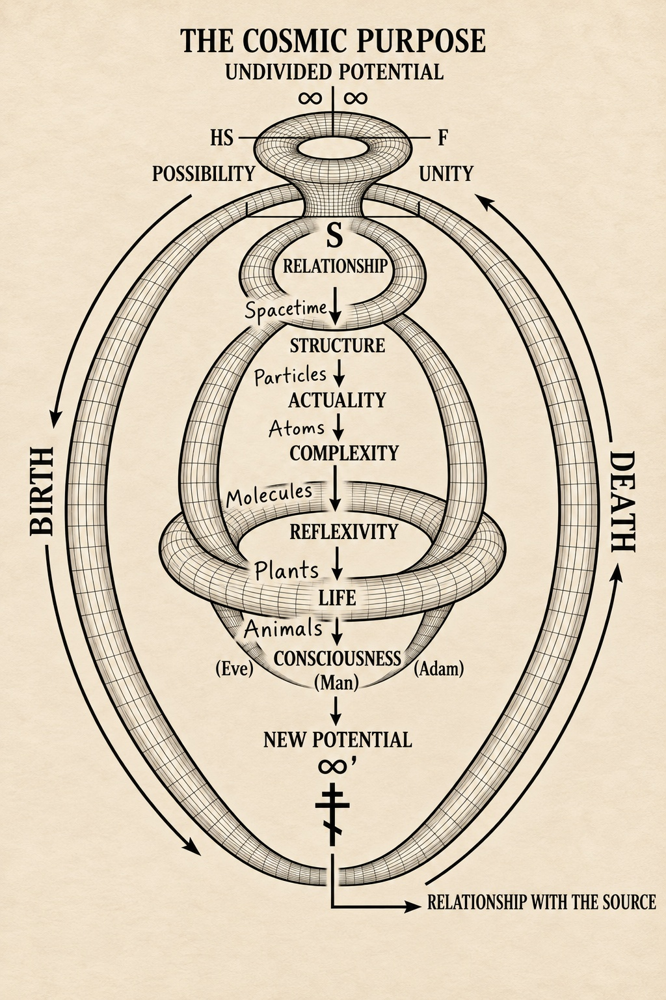
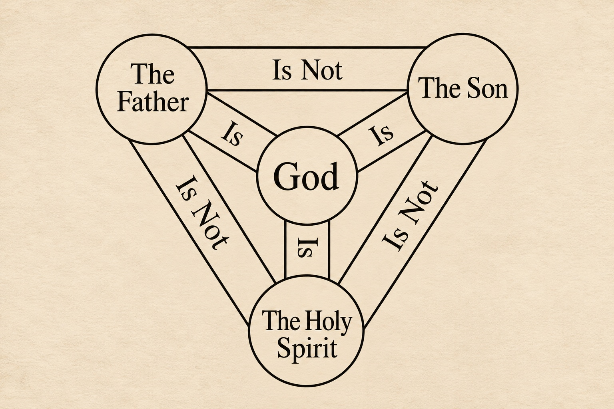
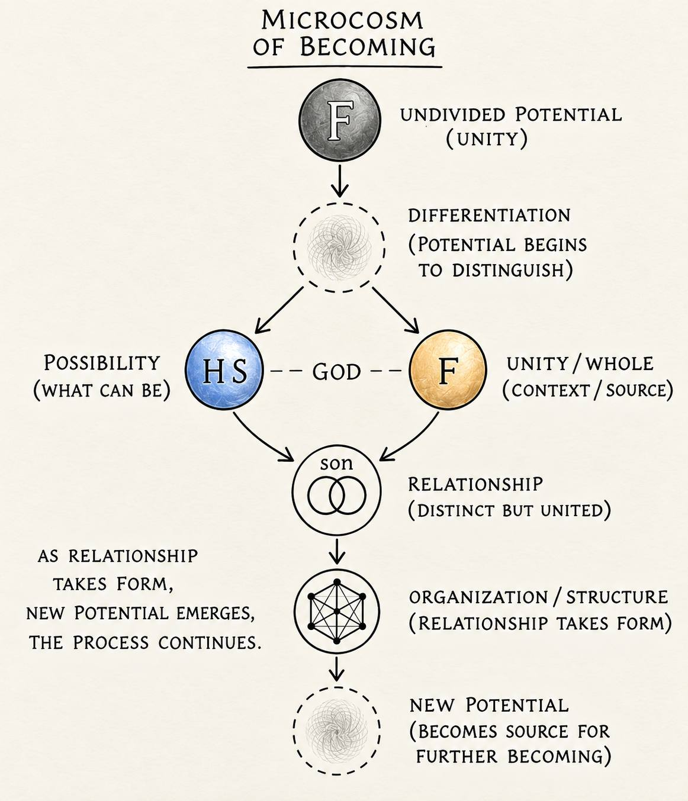
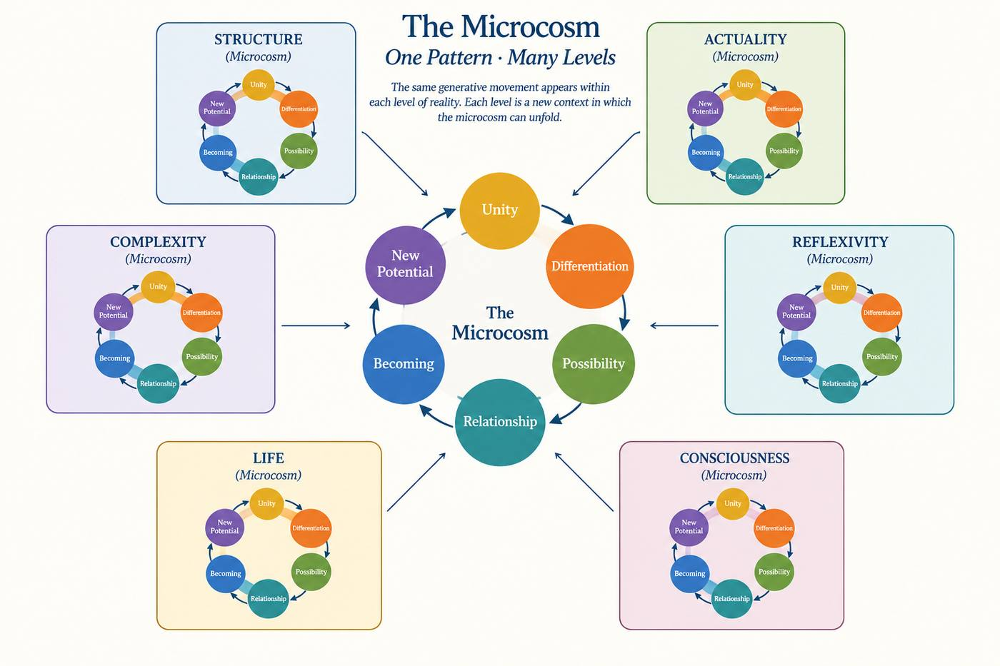
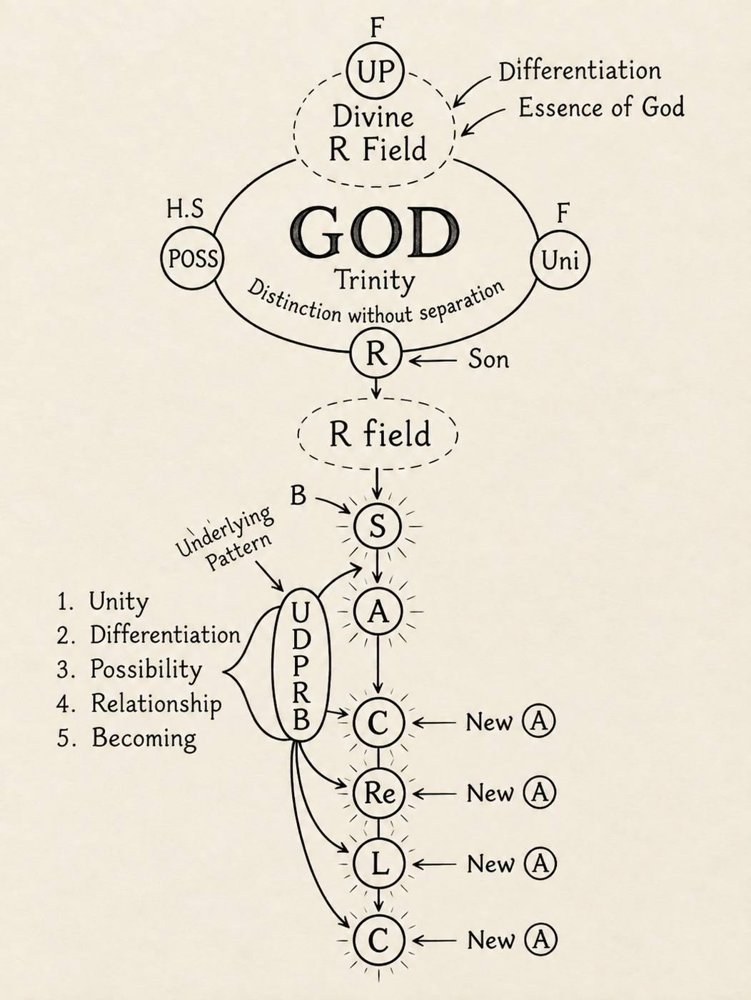

Project 1: The Cosmic Purpose
An inquiry into the structure of reality
Relationship
Relationship is the generative geometry of becoming: the structured, reciprocal dynamism through which distinct centers of being co-arise, co-inform, and co-transcend—turning potential into actuality, interior process into exterior expression, and the One into the Many. Relationship is not just something that exists between things that are already formed; it is part of what allows anything to become what it is. Every relationship introduces structure and constraint, shaping what can emerge while opening new possibilities for becoming.
It is therefore both the architecture and the activity of reality: the torus-like circulation through which source becomes expression and expression remains related to source. Everything that appears—particle, person, cosmos—does so as relationship, never just in relationship. Relationship is therefore not simply a feature of reality. It is the generative principle through which reality becomes.
But a claim this large raises a deeper question: how did I come to see reality this way?
It started with the idea that everything was connected. I just didn’t know how.
I began to wonder whether that connection was more than a feature of reality—whether that connection itself might be part of what allows reality to become.
From there, one question led to another. If everything is connected, what is the nature of that connection? How does it give rise to structure, form, and the possibility of something new? And how might the way things relate to one another extend from the smallest things we can observe to life, consciousness, and the cosmos itself?
Preface
I did not begin this book because I thought I had found the answer to everything.
I began it because I could not stop asking the questions.
Why is there something rather than nothing?
Why does reality have the structure it has?
How does something become something else?
How does complexity emerge from simplicity?
How does life appear?
And how and why does matter become conscious enough to wonder about its own existence?
I found myself moving between science, philosophy, mathematics, and theology, looking at the same reality from different directions. Each seemed to reveal something important, but none seemed to tell the whole story by itself.
Science showed me how much we can discover about the observable world. Mathematics revealed patterns that seemed to reach deeper than the objects carrying them. Philosophy forced me to question the assumptions beneath our descriptions. Theology opened another kind of question altogether: what might reality mean if it exists in relation to God?
I did not want to collapse these ways of thinking into one another. I wanted to let them remain what they are while asking whether they might still illuminate the same reality.
That question gradually became more important to me than any individual answer.
I began to notice something appearing again and again beneath the questions I was asking: Relationship.
Not just the idea that everything is connected, but the possibility that relationship is more fundamental than the things we normally imagine as being related.
If that were true, then becoming would not begin with finished things that later enter into relationship. Relationship itself would be part of what allows things to become.
That possibility changed the question I was asking.
Instead of asking only, What is reality made of? I began asking:
What makes becoming possible at all?
and then,
What if becoming is not something that happens between things, but something that happens through relationship?
Those questions led me into territory where different kinds of reasoning began to meet. Scientific descriptions raised philosophical questions. Mathematical structures suggested ways of thinking about form and transformation. Philosophical questions opened toward metaphysics. And the Christian understanding of God—particularly the Trinity—gave the idea of relationship a theological depth I could not ignore.
The Trinity does not provide a scientific equation for the universe. But it presents a vision of unity that is not isolation, and distinction that is not separation.
I began to wonder whether that relational pattern could serve as a lens through which reality might be considered—not as a proof, but as a possibility worth following.
That is what this book attempts to do.
It moves between what can be observed and what can be asked about what those observations mean. It distinguishes scientific claims from philosophical interpretation and theological reflection, while allowing each to remain part of the larger conversation.
The argument is therefore not that science proves theology, or that mathematics can demonstrate metaphysical conclusions.
It is an exploration.
At its center is a simple proposition:
Relationship is the structure of reality.
The rest of the book is an attempt to see what follows if that proposition is taken seriously.
How far can it carry us?
What does it reveal about becoming,
And what happens when the beings asking these questions realize that they are not standing outside the reality they are trying to understand, but are themselves expressions of it?
I don't expect every reader to agree with where the journey leads.
I hope, instead, that the questions remain larger than my answers.
Because this book is not an attempt to close the mystery of reality.
It is an attempt to enter that mystery more deeply—to look at what becomes, how it becomes, and whether beneath everything that emerges there may be a relationship that was there all along.
That is where we begin.
Before anything becomes.
The Generative Movement

Project 1 Introduction Before Anything Becomes
We live inside something we do not fully understand.
Every day, we move through a world of people, objects, places, and experiences. We wake up, make choices, talk to other people, fall in love, get hurt, wonder about our future, and go to sleep.
And underneath all of it is a strange fact:
Any of this exists at all.
Before we can ask what something is, we have to ask how it came to be.
We usually encounter reality after things have already become what they are.
We see the particle, the atom, the molecule, the cell, the organism, the person.
But what if we look beyond them?
What had to be possible before something could become definite?
What allows one form to give rise to another?
And what, beyond all of this, makes becoming possible in the first place?
These questions take us beyond the objects and events we normally study. They ask us to consider not only what exists, but the conditions through which existence can become structured and expressed.
This is where the idea of relationship becomes important.
At every level of reality, what something is seems connected to the relationships through which it exists.
This raises a deeper possibility:
What if relationship is not just something that happens between things, but part of what allows things to become what they are?
That is the question at the beginning of Project 1.
Here, I want to approach reality from the inside—not by beginning with the objects we can observe, but by asking what conditions might make distinction, structure, and becoming possible at all.
The first step is therefore not matter.
It is possibility.
A distinct thing requires some underlying potential from which it can become distinct.
Physical structure requires some underlying potential through which that structure can be realized.
Actuality requires a possibility that can be realized in definite form.
Here, actuality does not mean the beginning of reality, but the realization of a possibility in a definite form.
And before anything becomes, we are confronted with the question of what reality is at its most undivided.
This is where Undivided Potential enters the framework.
Not as nothing.
But as a way of thinking about the underlying wholeness from which distinction and becoming can be considered.
From there, the movement begins:
Unity/Potential → Possibility → Relationship → Structure → Actuality → Complexity → Reflexivity → Life → Consciousness → New Potential.
This sequence is not meant to describe a set of scientifically established stages through which the universe must have passed. Rather, it is a proposed map of the layers through which reality becomes increasingly differentiated and organized. Each term names a distinct mode of becoming—a way in which possibility can take form, generate new relationships, and open new possibilities.
In this sense, the sequence is both a metaphysical framework and a way of naming the layered structure of reality. It asks whether the different forms we encounter in existence—from physical structure to life and consciousness—can be understood as expressions of a deeper relational movement.
And this is where the theological question enters.
If reality ultimately comes from a God whose own being is understood relationally—Father, Son, and Holy Spirit—then relationship may be something fundamental to reality after all. It may belong to the deeper logic of existence itself.
Project 1 begins there.
Before consciousness.
Before life.
Before the molecule.
Before the atom.
Before the particle.
We begin with the question of what makes becoming possible.
Before anything becomes.
The Foundation of Reality
To understand the structure of reality, I begin with what must logically precede anything that becomes actual. I begin with undivided potential, possibility, and unity because these represent the most basic conditions required for anything to become distinct and actual:
Potential is the capacity for something to become. Possibility represents the different ways that becoming can unfold. Unity provides the underlying whole within which relationship can occur. Undivided means that this potential has not yet been differentiated into distinct forms or relations. The foundation of reality is not a particular physical substance or object, but a generative relational process.
By "generative," I mean that relationship does not just connect what already exists; it creates the conditions through which new forms of distinction, organization, and actuality can emerge. This should not be understood as a linear sequence with a single beginning and end, but as an ontological structure: a representation of how the generative process unfolds at its most fundamental level. The process itself is eternal and infinite.
The necessity of this foundation becomes clearer when considering the problem of distinction itself. Any distinction creates two distinguishable terms: an inside implies an outside, just as a self implies an other. A musical note provides another example. A note becomes distinguishable as a particular sound because it exists within a surrounding field of sound and silence. The same note can stand out against silence or become harder to distinguish when surrounded by other sounds, but in either case, its distinctness is understood in relation to the larger field in which it occurs.
neither term nor note can be understood as absolutely isolated from what surrounds it, because the very distinction that makes it identifiable establishes a relationship within a shared whole. The inside and outside are not simply two unrelated things, and the note is not simply an isolated sound; each is a distinguishable aspect of a larger unity. A distinction is therefore a difference between things that are related within some context. That context is the whole.
Mathematics offers a simple analogy for this same principle. The numbers one, two, and three are distinct from one another, yet their meaning is not exhausted by their isolation. Each occupies a particular place within a larger mathematical system, and their relationships can be expressed through patterns, sequences, and operations. The distinction between the numbers makes relationships possible, while the underlying mathematical structure provides the context in which those relationships have meaning. distinctness does not require isolation: things can be genuinely different while remaining intelligible through the relationships that connect them within a larger whole.
This creates a fundamental tension: distinction is necessary for relationship, yet distinction itself is intelligible only within some relational unity in which the distinct terms can arise and be related. Reality must therefore begin, in the most fundamental sense, not with absolute separation, but with an undivided potential from which distinction, possibility, and relationship can unfold. “Begin” here refers to ontological priority rather than temporal origin.
The undivided potential is not a point at which the process once started, but the foundational condition that remains present throughout the infinite movement, as each differentiation becomes the basis for further relationship and further differentiation. In this ongoing movement, each relationship introduces constraint, because the structure of a relationship limits and shapes the possibilities available within it, guiding what can emerge next.
This movement from unity through distinction into relationship raises a further question that becomes important for the framework: how can unity contain genuine distinction without becoming separation? This is not only a metaphysical question, but also a theological one. Within Christianity, this question is addressed through the doctrine of the Trinity---the understanding of one God existing eternally as Father, Son, and Holy Spirit. Like I said before, The Trinity provides an important theological context for the relational structure I am about to develop here, but before applying the Trinity to this framework, it is necessary to understand where the Christian doctrine comes from, why Christians believe it, and how the Church came to understand the relationship between unity, distinction, and the three persons.
The Origin and Meaning of the Trinity
The Trinity comes from the way Christians came to understand God through revelation, particularly through the life and teaching of Jesus Christ, his relationship with the Father, and the presence and activity of the Holy Spirit.
The Christian understanding begins with the belief that there is one God. At the same time, the New Testament presents the Father, the Son, and the Holy Spirit as distinct while attributing divine identity and activity to each. Jesus speaks of the Father and of the Spirit, identifies himself in a unique relationship with the Father, and commands his disciples to baptize "in the name of the Father and of the Son and of the Holy Spirit." The early Christian community encountered God not as three separate gods, but as one God revealed through these three distinct persons.
The early Church did not immediately possess a fully developed philosophical explanation for how these three could be understood as one God. Instead, Christians gradually developed their understanding through Scripture, worship, baptism, prayer, and theological reflection. As questions arose about the relationship between the Father, Son, and Holy Spirit, the Church sought language that could preserve two essential convictions at the same time: God is one, and the Father, Son, and Holy Spirit are genuinely distinct. The Councils of Nicaea in 325 and Constantinople in 381 were especially important in this development, leading to the formulation of the Nicene-Constantinopolitan Creed.
The resulting doctrine does not describe the Trinity as three separate beings who cooperate with one another. Rather, Christian theology understands the Father, Son, and Holy Spirit as one God, sharing the same divine nature or essence, while remaining distinct in their relationships to one another. The traditional language describes the Father as begetting the Son and the Holy Spirit as proceeding from the Father; the Son is eternally begotten, not created, and the Spirit is likewise eternal. These distinctions are relational rather than divisions of God into separate substances.
This relational character of the Trinity is particularly important for my framework. Christianity does not understand God's unity as a solitary or isolated unity. The unity of God contains real distinction without becoming separation. The Father is not the Son, the Son is not the Holy Spirit, and the Holy Spirit is not the Father, yet their distinction does not divide the one divine reality. Christian theology speaks of one God in three persons whose distinctions are understood through their relationships with one another.
The Trinity was not formulated as a scientific model of the universe. The question is whether the relational structure revealed through it can provide a theological foundation for the generative process proposed here.
Within my interpretation, the Father represents Undivided Potential and Unity, the Holy Spirit represents Possibility, and the Son represents Relationship. These are not intended to redefine the Christian Trinity or claim that the three persons are just symbols for philosophical concepts. Rather, they are the particular ways in which I am using the Trinitarian mystery as a conceptual lens for investigating the generative relational structure of reality.
(I use divine here to refer to a mode of being prior to physical differentiation: an inexhaustible, transcendent ground of potential, possibility, unity, and generative relationship from which determinate reality can emerge. The divine is therefore not a substance located somewhere beyond the universe, but the ground from which the differentiated reality of space, time, and form becomes possible.)
The central idea is that divine unity does not require the absence of distinction. The Trinity presents a unity in which distinction and relationship coexist without separation. This becomes foundational to my framework because the same principle appears throughout the progression I am investigating: distinction does not have to destroy unity, and relationship does not require complete separation. Instead, distinction can exist within a greater unity, where distinct things are understood through their relationships with one another. In this sense, relationship does not erase distinction; it gives distinction structure, meaning, and a way to participate in a greater unity.
The Trinity provides the theological starting point for the relational structure that follows. The Father, Holy Spirit, and Son are not simply three stages occurring one after another. They are eternally related within the one divine reality. My framework then explores whether this fundamental pattern of unity, distinction, possibility, relationship, and becoming can be reflected at increasingly organized levels of reality, from structure and actuality through complexity, reflexivity, life, and consciousness.
In this sense, the Trinity does not function just as an analogy added onto the scientific investigation. It provides the theological foundation from which I ask whether relationship itself can be understood as generative: whether unity can give rise to distinction without becoming separation, whether distinction can enter into relationship, and whether relationship can continually generate new forms of expression.

Father - Undivided Potential / Unity
The Father is the undivided source. At this level of description, nothing has yet been distinguished. Possibility and unity are not yet distinguishable because everything is contained within the undivided source. Relationship has not yet emerged, because there are not yet distinct terms between which a relationship can exist.
The Father represents the source from which the process unfolds.
Through a "desire to give," which is itself the purpose of the generative movement, the undivided potential begins to differentiate, allowing possibility to emerge within unity. This is not a separate event occurring after undivided potential, but the beginning of one continuous relational movement in which purpose gives rise to possibility, possibility enters into relationship, and relationship expresses the original purpose of giving.
This understanding connects with the Christian theological idea of the Father as the eternal source of the Son and the Holy Spirit. In the Nicene Creed, the Son is described as "begotten of the Father before all ages," while the Holy Spirit is confessed as proceeding from the Father. The Father is understood as the eternal source within the Trinity, not as a creator who brings the Son and Holy Spirit into existence as creatures. Within this framework, the Father represents the undivided unity from which possibility and relationship are eternally expressed.
Holy Spirit - Possibility
The Holy Spirit represents possibility within unity—the ways in which what could become can be expressed, brought forth, and ultimately become life.
Possibility is not something created as a separate event after undivided potential. Rather, possibility emerges as the first differentiation within the undivided source beginning a continuous relational movement in which unity and possibility become distinguishable, and relationship emerges between them.
Possibility represents what could become, but by itself it remains indeterminate. For possibility to become something definite, it must become differentiated through relationship. This is where the Son---as Relationship---becomes important.
This can be connected to the Nicene Creed's confession of the Holy Spirit as "the Lord, the giver of life." Within this framework, The Spirit represents possibility because possibility is the capacity for what can become to be expressed, brought forth, and ultimately become life.
The Spirit is not understood as just a later stage in a temporal sequence, but as an eternal aspect of the relational movement through which what can become is brought forth.
Son - Relationship
The Son allows what was undivided to become distinguishable without destroying the underlying unity.
The Son is not simply "a thing that comes after possibility." Rather, the Son represents the relationship through which unity and possibility become distinguishable while remaining united.
The process can therefore be understood as a continuous unfolding:
Undivided Potential / Unity
↓
Possibility emerges within Unity/differentiation
↓
Possibility and Unity become distinguishable
↓
Relationship emerges between them
↓
Possibility becomes definite
In this sense, the process has a cyclical or generative character:
unity gives rise to possibility, possibility enters relationship, relationship produces differentiation and structure, and differentiated structures can participate in new forms of unity. It is not a closed circle in which everything simply returns to the starting point, but an unfolding cycle in which unity continually gives rise to differentiated relational forms, like microcosms of reality.
This understanding can be related to the Nicene Creed's confession of Jesus Christ as "the only Son of God, eternally begotten of the Father" and that "through him all things were made." The language of eternal generation is important because it means the Son is not a temporal creation or something that came into existence after the Father. Rather, the Son's distinction from the Father is eternal. The Son is also the Word of God---the eternal expression of the Father.
Within this framework, the Son as Relationship represents the eternal relational distinction through which what is undivided can become distinguishable while remaining united. As the Word, the Son is the concrete expression of what is held within the Father, making the undivided source expressed and distinguishable without separating it from its source. The Creed's statement that all things were made through the Son connects this eternal relationship directly to creation: relationship allows unity to become distinction without becoming separation.

The mapping developed above treats the Father, the Holy Spirit, and the Son as a conceptual lens for unity, possibility, and relationship. Undivided Potential (the Father) differentiates into Possibility (the Spirit) and Unity/Whole (the Father as source), which then meet in Relationship (the Son). From that living relationship, form organizes, and in turn generates new potential — so the process of becoming continues.
Perichoresis --- Distinction Without Separation
Perichoresis is the traditional language for the mutual indwelling of the Father, Son, and Holy Spirit. Each person is distinct. None exists as a separate substance beside the others. The distinction is real, and the unity is not the later product of three parts being assembled.
The persons exist in and through one another.
This matters for the framework because the deepest hole in the concept is the problem of the first distinction, while also being its fundamental microcosm. If undivided potential is truly prior to relationship, then relationship arrives too late to be generative. If relationship is already present in the source, then "undivided" cannot mean the absence of relation. The problem is therefore not simply how the first distinction occurs, but how distinction can be real without becoming separation. In this sense, the first distinction is also the pattern the framework will continue to encounter at every later layer.
But Perichoresis is the theological language for this distinction without collapsing the three persons into one another. Unity does not precede relation and then emit it. Unity is already relational. Distinction does not wait for a later stage in order to be real.
Read this way, the movement Unity → Possibility → Relationship is not an order of origin in which the Father first exists alone, then possibility appears, then the Son begins. It is a way of attending to relations that are eternally simultaneous. The arrows in the diagram mark intelligibility, not derivation in time, and not a ranking of the persons.
Possibility is not a creature of unity. Relationship is not a function added once possibility has arrived. Each is what it is in the others.
Perichoresis gives a theological expression to what I mean by “distinction without separation.” From this foundation, I turn to a further question: if the Trinity reveals something about the nature of divine relationship, might something of that relational structure also be reflected in creation? Christian thinkers have long understood creation as bearing a trace of its Creator. Irenaeus described creation as being formed through the Word and the Spirit, and argued that God’s works reveal something of their Creator. Augustine later developed the language of a vestige or trace of the Trinity in creation, suggesting that created things can bear a reflection of their divine source through their unity, form, and order. Aquinas would develop this tradition further, speaking of a vestigium Trinitatis—a trace of the Trinity present within created things. Creation, in this tradition, does not simply exist because God made it; it can also bear signs of the God from whom it comes.
This does not mean that creation is the Trinity, or that physical structures reproduce the divine life of God. It means that creation can reflect, in a finite and analogous way, something of the relational order from which it comes.
At later layers, we can see patterns that echo this principle. A particle is not a field, yet it does not stand free of the field in which its identity is expressed. An organism is not its environment, yet it does not remain itself by sealing itself off from it. Consciousness is not the world, yet it comes to know itself through relation to what is other than itself. These are not proofs of the Trinity. They are created analogies of a deeper relational principle.
The mini-torus talked about later in this project is a geometric image of this principle. The smaller pattern is not a reduced copy of the Trinity. It is a recurring image within creation of what I mean by distinction without separation.
The Ontological Delay
The cosmic purpose diagram illustrates what I call ontological delay: the difference between a fundamental condition and the level at which its organization becomes definite and physically expressed. This is not a delay in time, but a difference in the level of reality at which something is expressed. The movement works in both directions. Each level both expresses what came before and provides conditions for what comes next.
Layer 1 --- Relationship Becomes Organized
What is set here does not stay here. Each later layer will take this movement and express it again through whatever organization the previous layer has already made possible.
Relationship does not immediately become physical structure. It is eternally present within the infinite relational movement, but its physical expression emerges as that relationship becomes increasingly organized and constrained by purpose---"the desire to give." At this level, relationship is the foundation from which physical structure can emerge. It first expresses itself through the underlying conditions that make physical reality possible; space time, quantum fields, geometry, and vibration leading to structure. These are not separate creations standing apart from relationship, but expressions of the relational movement itself as it becomes increasingly organized, constrained, and expressed within a physical context.
Relationship is not standing next to physical reality. It is the process through which physical reality can take form.
As organization and constraint increase, distinct structures become visible. Relationship does not vanish when structure appears.
Structure is what emerges when relationships become organized into stable conditions.
This is also where distinction without separation becomes important. Structure introduces definite distinctions, but those distinctions are not separated from the relationships that constitute them. Constraint gives relationship form; it does not remove relationship from the form.
The "step" from relationship to structure is mostly a change in how perceptible a process already underway has become.
Layer 2 — Structure
Differentiation, Relationship, constraint, and organization are still at work. They are taking a form you can point to.
Layer 1 is relationship becoming organized. Layer 2 is that organization as a condition. Structure is not bolted onto relationship from outside. It is relationship expressed as an organized setting in which something may later take hold.
The form you can point to here is not yet a particle or an atom.
Structure, in this framework, is the invisible organized condition that makes those later occupants possible: quantum fields, spacetime, geometry, and vibration. These are already constrained and already patterned. They are still not the particular things that will occupy them.
A field can be present without this particle. Spacetime can be present without this atom.
Structure is what can be there when the occupant is not.
Possibility has not disappeared. It has been narrowed through relationship and constraint. Relationship brings possibilities into relation; constraint limits what can persist within those relations.
Quantum fields, spacetime, geometry, and vibration belong here because they are that condition, not yet its occupants.
Particles are not structure itself. They are what happens when that condition is realized. That realization is Layer 3.
And when something becomes actual, it does not simply end the movement. Structure itself is already a type of actuality, and as an actuality it creates new conditions and relations through which further possibilities can emerge. What becomes actual therefore remains part of the ongoing movement of becoming, opening new potential for what can come next.
Layer 3 --- Actuality
What has been organized now becomes the ground on which a particular can stand.
By "actual," I mean that a possibility has become a definite occupant of the physical world: something that can persist, interact, and stand as a term in further relationships. Quantum fields, spacetime, vibration, and geometry remain Layer 2. They are the structured condition. Actuality is a realization inside that condition --- a photon , a particle, a bound state --- not the condition itself.
Physics already has a word for many of these realizations: excitation.
"Excitation" tells us what kind of occupant the theory is talking about. It does not answer the question this layer is for. The question is why a standing occupant takes hold at all, rather than the organized condition remaining only a condition.
The field already contains more possible modes than will ever be realized. Relationship is what narrows that availability: coupling among modes, conservation, the requirement that a pattern persist long enough to interact as a *this* rather than dissolve back into the background. Constraint is how possibility becomes particular.
Actuality is relationship held long enough to persist as a term.
I do not want actuality equated with the atom. An atom is one actual.
Actuality is the broader condition of realization: a structured possibility that has taken hold as a particular. Particles already belong to that movement. Atoms are a further tightening among them, already on the way toward complexity.
What becomes actual becomes the ground of what can become possible next.
Complexity is what happens when those actual structures start relating to one another in earnest.
Layer 4 --- Complexity
Here the recurrence is hard to miss. What was a whole at one level becomes the field in which new potential can arise, and the same generative movement—unity, differentiation, possibility, relationship, and becoming—can begin again. What changes is not the fundamental movement itself, but the conditions through which it unfolds. Each new actuality becomes a new starting point for further becoming.
Layer 3 is realization: particular actuals inside an already structured condition. Layer 4 is what happens when those actuals interact and combine.
But once actuality has emerged, it does not close the movement. It becomes a new field of potentiality. The actual structure now contains possibilities that were not yet actual at the previous layer. Those possibilities still enter relationships. Those relationships still constrain what can stand. New organization appears. A new actuality becomes a new potential for further becoming. Each level is therefore a microcosm of the larger movement, not a different metaphysics, but another expression of the same generative pattern. The movement that begins in potential & unity, differentiates into possibility, enters relationship, and becomes new actuality recurs at every level, so that what emerges at one level becomes the potential for further becoming at the next.
Atoms relate and become molecules. Molecules become the next actuality. and that actuality opens a new field of potential for further relational organization. The pattern does not climb a ladder and get off. Each layer becomes a starting point for the next expression of the same generative movement.
This is distinction without separation in the movement of becoming. Each new level is genuinely distinct from the level beneath it, yet it remains continuous with and dependent upon what came before. What emerges does not erase what preceded it; it contains and reorganizes it within a new relational whole.
Complexity is not simply "more structure." It is the multiplication of the original relational movement within structures that have already become actual. The same generative pattern continues from actuality to new potential, from new potential to possibility and relationship, from complexity to reflexivity, and beyond, with each new level containing and expressing patterns of the levels beneath it.
Layer 5 --- Reflexivity
The pattern turns inward. The organization can now take part in itself, and be affected by itself.
Layer 4 multiplies relations among structures. Layer 5 begins when the resulting organization can answer its own interior. Relationship is no longer only outward. It folds.
Possibilities inside the system still relate, organize, and constrain. But now something new happens: the system’s own state becomes part of what determines what happens next.
The organization begins to work on the system that produced it. In a limited sense, the system is both source and participant of its own activity. It does not just undergo interactions; its own organization becomes part of the interaction.
This is why reflexivity matters for life and consciousness. The system is no longer only undergoing interactions. Its organization starts to maintain, modify, and answer itself.
New potential opens here that was not available before. Life and consciousness, as I am treating them, are not a second kind of reality. They are this same recursion at a higher order of organization.
Layer 6 --- Life
Life is the same movement inside a system that can now preserve the relationships that constitute it.
Reflexivity is response. Life is that response becoming able to keep the system in existence. The system does not only take part in relationships. It keeps the relationships that keep it.
Inside a living system the old sequence is still running: unity gives rise to differentiation, differentiation opens possibility, possibility enters relationship, and relationship gives rise to becoming. Life is this pattern organizing and renewing itself.
Matter has not just gotten busier. It has become a system that can take part in its own continued becoming---sustaining itself, answering its surroundings, developing through the relations that make it what it is.
Layer 7 — Consciousness
Consciousness carries the repetition inward again. What had been physical and biological organization can now be experienced and recognized.
Life keeps itself. Consciousness is that kept organization becoming able to experience and recognize its own relations. Relationship becomes aware of itself.
If relationship is the most fundamental pattern of reality, then consciousness represents one of its most significant expressions. Consciousness does not create relationship; it becomes capable of recognizing and participating in relationship consciously. In this sense, consciousness can be understood as a culmination of the relational movement that has unfolded throughout becoming.
The progression from possibility to structure, from structure to actuality, from actuality to complexity, and eventually to life and consciousness is not simply a progression toward greater complexity. It is a movement toward forms increasingly capable of participating in relationship in richer ways. At consciousness, relationship becomes capable of being known from within the form itself.
This gives consciousness a particular significance. The creature isn’t just related to the Source; it can become aware of its relationship with the Source. The movement that began in undivided unity has unfolded through distinction and differentiation until relationship becomes capable of conscious participation.
consciousness represents a kind of pinnacle—not because becoming stops there, but because the relational pattern has reached a point where the participant can recognize the relationship in which it already exists.
The creation of Adam provides a biblical expression of this transition. Adam is formed from the earth and receives the breath of life from God, becoming a living being. He is then placed within relationships—with God, the creation, and eventually Eve. Adam’s consciousness allows him to recognize distinction: himself and the other, the world and himself, and the possibility of what he might become. In this sense, Adam represents a microcosm of the larger process: unity gives rise to distinction, distinction creates possibility, possibility enters into relationship, and relationship creates the conditions for further becoming.
But the biblical story suggests that this consciousness was never meant to exist in isolation. Humanity’s relationship with God precedes the rupture we experience. The creature arises within relationship and is already grounded in the Source. Consciousness does not create that communion; it makes possible the capacity to know, receive, and participate in it consciously.
humanity’s original orientation was toward conscious communion with the Source—with God. In the biblical language of Genesis, this communion is represented as humanity’s participation in the underlying relational coherence of reality before the rupture of the Fall.
but because of our self aware consciousness it introduces something new into the process: the capacity not only to recognize relationship, but to respond to it. What can be consciously received can also be resisted, distorted, or rejected. The same capacity that makes conscious communion possible therefore also makes rupture possible.
The Fall gives us one answer to what happens when relationship is no longer received as communion with the Source, but turned inward toward separation.
From this perspective, the Fall also shows what consciousness can do with this openness. It can receive becoming through relationship, or it can attempt to determine its becoming as though it were apart from the Source. But that still does not finally answer the deeper question of why consciousness contains this openness in the first place.
That question can also be seen within the story of the Garden. God places the tree of the knowledge of good and evil within a world where human beings already possess consciousness, relationship, and the capacity to choose. The tree therefore becomes a biblical expression of a deeper question: Why would God create conscious beings with
genuine openness—the capacity not only to receive becoming, but to choose how they will become?
My hypothesis is that God created conscious beings with genuine freedom because genuine relationship requires genuine participation. If humanity were created only to receive what God gives, without the capacity to respond freely, then communion would not be fully reciprocal. The openness of consciousness therefore makes possible not only the freedom to turn away from the Source, but also the freedom to participate consciously in the relational reality of the Source.
Genesis does not give a complete philosophical answer to that question. It gives us the story in which the possibility of refusal becomes real. The capacity to become is also the capacity to choose what kind of becoming we participate in.
That is a deeper question to ponder. This framework can describe the pattern, its possibilities, and its consequences, but it cannot finally explain why consciousness has this depth of openness. The question of why consciousness contains this New Potential at all remains open.
Perhaps that openness is not a problem to be solved so much as a feature of reality to be encountered. Consciousness does not simply inherit the movement of becoming. It becomes capable of recognizing it and participating in it.
In this sense, the possibility of what I call New Potential is already present within consciousness. But Humanity possesses both the original capacity for communion and the freedom that makes rupture possible.
The eating from the tree of the knowledge of good and evil marks the breaking of that relationship: not the disappearance of the underlying potential for union, but a rupture in humanity’s conscious participation in it.
What changes is not the existence of relationship itself, but the way distinction is understood and lived. Distinction, which had existed within relationship, is now experienced as separation. The geometry of becoming is ruptured—not because relationship ceases to be the structure of reality, but because the conscious creature turns away from the relational source that sustains it.
This changes what follows. Once distinction is treated as separation, relationship is no longer simply received as the condition of becoming. It becomes something that must be restored and entered again. The rupture therefore introduces a new kind of possibility into the process.
What emerges after this rupture is therefore something different. New Potential is not simply the appearance of possibility for the first time. Possibility was present from the beginning. New Potential is the possibility of renewed union after separation has occurred.
A deeper relationship can emerge through the renewal of one that has been broken. When relationship is restored after rupture, it is not necessarily restored to exactly what it was before. The experience of separation can introduce a new dimension of awareness: the relationship has now encountered the possibility of loss and has been given the possibility of return. What was once simply given can become consciously received, freely chosen, and actively renewed. In this sense, restoration does not erase the rupture. It incorporates what has been learned through it, allowing relationship to emerge with a greater depth of awareness and participation.
The movement of becoming has passed through distinction, actuality, complexity, life, and consciousness—and now through rupture. What follows is not a return to an untouched beginning, but the opening of a new relational possibility shaped by everything that has come before.
The New Potential is the possibility of relationship being consciously restored after relationship has been broken.
New Potential
Although New Potential becomes especially significant at consciousness, it is not something that first appears there. It is present throughout the movement because every completed becoming opens new potential for further becoming. The movement continues because what has been realized always opens the way for what can emerge next.
At every layer, then, the same generative movement can be described as:
Unity → Differentiation → Possibility → Relationship → Becoming → New Potential
This is why each layer is not a closed step in a ladder. Every actuality becomes a new condition from which further becoming can arise. New Potential is therefore present throughout the movement, not as a separate stage, but as what is continually opened by what has become.
What changes at consciousness is not the existence of New Potential, but our relationship to it.
Before consciousness, New Potential is simply opened by what has become. At consciousness, an actuality can recognize that it is participating in a field of possibilities. It can recognize relationships, imagine what could become, and choose how to participate in that becoming. New Potential becomes something that can be consciously recognized and entered into.
This is why New Potential becomes especially important after consciousness, even though it is present at every earlier layer.
The possibility of refusal appears here as well. A conscious being can receive becoming through relationship, or attempt to determine its becoming apart from its Source. The Fall shows what happens when the openness of consciousness is turned toward separation.
Within the Christian story, Jesus becomes the way through which this broken movement is opened again. He is the second Adam—not simply another human being within the sequence, but the one who enters fully into human becoming while remaining in faithful relationship with the Father. Where Adam represents humanity’s turning toward becoming apart from God, Jesus represents humanity’s return to becoming through relationship with God.
This comparison does not equate Adam and Jesus, nor suggest that they occupy the same role. It points instead to the theological pattern they represent: not an equivalence between the two figures, but a contrast between two movements—one turning away from relationship with God, and the other restoring relationship through faithful participation in God. This contrast becomes most fully visible in what Christianity understands to have happened in the Cross.
The Cross does not add another stage to the sequence. It marks a turn in the meaning of the sequence itself. What had become closed through separation is opened again through relationship. Jesus enters the condition of human finitude and carries that rupture through death rather than answering separation with separation. In the Christian confession, resurrection marks the opening of life beyond that rupture.
This is the gift: not that humanity creates its own way back to the Source, but that the Source gives itself within the finite world. In Jesus, God enters the conditions of human becoming so that humanity can be brought back into relationship with God. The gift is received rather than manufactured. What was sought through separation is offered again through relationship.
New Potential is not a second infinity added after the process, and it is not a return to an undifferentiated fullness that existed before relationship. The original ∞ names the inexhaustibility already present in the first differentiation of unity and possibility in
relationship. Unity does not cease to be unity when possibility emerges from it, and possibility does not exist apart from the unity that gives it a field in which to become. Their relationship is itself inexhaustible.
By inexhaustible I mean what is given can be received and given again without diminishing the giver. Gift does not subtract from the Source.
∞′ therefore does not mean that something new has been added to the Source. Nothing within the finite process creates the Source’s inexhaustibility. What changes is the way that inexhaustibility is encountered.
The Source that gives without being diminished is now encountered from within the finite world itself. Finitude is not abolished. Its meaning changes. What had functioned as a boundary against the Source can become the medium through which the desire to give is received and returned.
And this is why the movement does not simply return to where it began. The Christian claim is not that humanity becomes God by escaping finitude, but that humanity is brought into restored relationship with God through Christ. The goal is not the erasure of distinction, but participation in a unity that does not require separation.
The movement therefore turns toward a deeper question. If restored relationship with the Source is not an escape from finitude, but a transformation of how finitude participates in the divine, then what does it mean for the Source itself to enter the conditions of finite becoming?
Kenosis — The Source Taking on Constraint
If New Potential is the reopening of relationship from within the rupture, we still have to ask how that reopening is possible.
The answer, within the Christian claim, is that the Source does not remain outside the conditions of creation. The Word enters them.
This is what kenosis names: the self-emptying of the Son, the movement of the Source into the limits of the world it has given rise to. In the language of this framework, kenosis is the Source taking on constraint.
That matters because constraint has been present throughout the entire process.
Relationship establishes distinction; as relationship becomes organized, boundaries give possibility definite conditions. A form becomes what it is partly because it cannot be everything else at once. To be something definite is to be distinguishable from what it is not. Distinction, therefore, does not begin with finitude. Rather, finitude gives distinction a definite and embodied expression. Finitude is not an accident added to reality, but a condition through which distinction can become physically determinate.
The Christian claim goes further. The Source does not simply bring finite reality into being and remain untouched by its conditions. The Source enters them. The transcendent ground enters the conditions of finite becoming itself.
The Cross therefore marks not another biological stage, but the Source entering from within the conditions of finite becoming itself. The Fall had introduced rupture, separation, mortality, and vulnerability into the human condition. These realities are not observed from outside. In Christ, they are entered from within.
Sin, understood within this framework, is ultimately a rupture of relationship with the Source. Humanity does not merely break an external rule; it turns away from the relational reality from which its existence is received. In that rupture, humanity moves toward separation, fragmentation, mortality, and death. If the consequence of separation is death, then restoration cannot simply remain outside that condition. The Source enters it. In Jesus, God takes on the full limitations of finite existence and enters the consequences of humanity’s rupture from within. He accepts rejection, suffering, vulnerability, and finally death itself. The shedding of his blood becomes the giving of his life in complete self-giving relationship: not because suffering has value in itself, but because love enters fully into the condition from which humanity needs to be restored.
If relationship is the generative pattern of reality, and if the Son is understood as the Word through whom that relationship is expressed, then the deepest expression of relationship is not simply the creation of another form. It is self-giving.
The descent in the toroidal image can therefore be understood as a geometric expression of kenosis. The Source does not remain outside the constrained path. It enters it.
This does not mean that the Source becomes less than the Source. Nor does it mean that the finite ceases to be finite. The distinction remains.
What changes is the relationship between them.
The Source can be present within constraint without constraint becoming the final boundary of relationship. Finitude can become the place where the relationship between Source and creation is encountered from within creation itself.
And once the Source has entered the conditions of finite becoming, we can look again at the arrows surrounding the structure.
The Circulation of Becoming
The arrows of birth and death surrounding the structure represent another dimension of the process. They show that the forms within it are not isolated endpoints. Each form is a temporary expression of relationship, and each participates in a larger circulation of becoming.
Birth is the emergence of distinction from potential. What was not yet expressed becomes a particular form. Relationships gather, constrain, and organize possibility until something definite can exist as an actuality.
But no actuality exists by itself or for itself. Every form is held within a larger relational movement. It receives what came before it, participates in what surrounds it, and carries within itself possibilities for what can come after it.
Death, therefore, is not the termination of becoming. It is the dissolution of a particular form back into the wider relational field from which further forms can emerge.
The form itself may cease to exist as that form. A body dies. An organism breaks down. A structure loses the organization that made it what it was. But what has entered that form does not simply become nothing. It is released from that particular configuration and becomes available for new configurations.
At the physical level, this circulation occurs within the universe itself. Matter is reorganized, energy is transferred, and structures give way to new structures. At the metaphysical level, the deeper field of potential is not exhausted by any particular actuality. The inexhaustibility belongs not to an infinite amount of physical energy, but to the possibility of further becoming.
The arrows therefore do not represent a simple circle in which the same things endlessly repeat. They represent a circulation of becoming. Forms arise from a field of possibility, become distinct through relationship and constraint, exist for a time as particular actualities, and eventually dissolve back into the wider movement from which new potential can emerge.
The universe can therefore be understood metaphysically as something more like a primordial relational field than a collection of separate objects. What we call a thing is a temporary stabilization within that field. Its boundaries are real, but they are not absolute. A form can be distinct without being independent of the whole.
The original ∞ remains different from what follows death. The original infinity represents differentiation—the inexhaustible opening through which distinction and possibility can emerge within unity. What follows death is not a return to the original ∞,
but a continued movement through distinction, relationship, dissolution, and renewed formation.
A particle can enter a new structure. a molecule can become part of a living organism, and a living organism can become part of a larger living system.
At every level, what has become can become material for what comes next.
But becoming is not only a movement toward greater organization. Forms can also break down. A molecule can separate into its individual atoms. A living body can decompose and return its matter to the wider physical and chemical world. A structure can lose the organization that made it what it was and release its components into new relationships.
The same generative movement continues through both formation and dissolution:
Unity → Differentiation → Possibility → Relationship → Becoming
What becomes actual can enter new relationships and generate new potential, while what has become can also dissolve from its present form and become available for other configurations. In formation, relationships gather and constrain possibility into a definite form. In dissolution, those relationships change or loosen, releasing what had been organized into new possibilities and relationships. The movement is not reversed; it continues.
The actuality is never the final word. Once a form has been realized, it does not become an isolated endpoint. Its continued existence depends upon relationship, and when that particular organization ends, its forms can enter new relational patterns. In this sense, becoming is a circulation: forms emerge through relationship, persist through relationship, and eventually release their forms into the wider field of possibility.
Death is therefore not simply an absence of life. It is a transition in the organization of becoming. Something that could no longer continue in one form becomes available for another.
The process does not simply repeat what was.
It becomes.
But for consciousness, something new is possible.
If the process simply continued through becoming, consciousness would remain within the same circulation: birth, development, death, dissolution, and the emergence of further potential. Yet consciousness can recognize the relationship in which it exists. It can ask what it means to belong to the whole rather than simply participate in it. It can choose relationship or refuse it. It can treat distinction as separation, or recognize that distinction does not require separation.
Christian theology gives this possibility a deeper expression in Christ. Humanity was created for union with God, not separation from God. The rupture represented by Adam is therefore not the beginning of relationship, but a break within a relationship that already existed. In Christ, that union is restored: the creature can enter again into communion with God without ceasing to be distinct.
The relationship that had been ruptured is restored, not by erasing the distinction between creature and Source, but by transforming separation into participation.
Christ therefore does more than restore a relationship. He opens a path through that relationship back toward communion with the Infinite again. The destination is not the disappearance of the self into God, but participation in the inexhaustible life of God with Christ. Heaven, in this sense, is not simply a place beyond the universe. It is the fulfillment of relationship with the Infinite—the creature becoming fully capable of receiving and participating in the life of the Source while remaining distinct.
The Cross enters the circulation at the point where becoming reaches its deepest rupture. The Source enters the constrained path, takes on finitude, and passes through death. But death does not have the final word. The movement turns.
This is not a return to undivided sameness. It is not the disappearance of distinction back into the original ∞. The distinction remains. What changes is the relationship between distinction and the Source. What was experienced as separation can become participation again.
This is the significance of New Potential.
The movement is no longer simply from possibility toward another form of actuality. It becomes a movement toward communion—distinction without separation, consciousness without isolation, and relationship without the loss of the self.
The goal is not to escape distinction.
It is to escape separation.
What began as possibility becoming actuality has now opened into something more: becoming can become conscious participation in relationship with the Source.
And this brings us to the larger question:
What is the process becoming for?
The Cosmic Purpose
The purpose revealed through this process is relationship. Relationship creates constraint, and through constraint, relationship gives direction to possibility. By limiting what can become, constraint allows certain forms of organization to emerge while excluding others. In this way, relationship does not simply connect what already exists; it creates conditions for reality to develop toward greater organization, complexity, and ultimately greater relationship. Purpose emerges through the constraints created within relationship. As the process develops, relationship becomes increasingly complex and eventually reflexive, giving rise to life and consciousness. In consciousness, relationship can be experienced, recognized, and chosen.
The Fall introduces the possibility of separation, but it also opens the possibility for a deeper form of unity: relationship with the Source without the loss of distinction. The movement of the process is not toward a return to the original undivided state, but toward a unity in which distinction, relationship, and consciousness can exist together. What begins as undivided unity develops through distinction and relationship until reality becomes capable of consciously participating in the unity from which it came. The cosmic purpose is not simply to become one, but to move toward a form of unity in which distinct beings can consciously choose and participate in relationship with the Source. Purpose is the direction that relationship gives to possibility—the movement toward greater relationship, greater unity, and ultimately conscious participation in the Source.
Purpose gives rise to possibility. Possibility enters relationship. Relationship leads back toward the purpose that started the movement—not to undivided sameness, but to unity fulfilled as relationship. At the root of it is the desire to give.
The supreme expression of this desire to give is realized when the Source enters directly into its own constrained creation, taking on finitude through the Cross to establish a New Potential. Here, the initial impulse to give reaches its ultimate fulfillment. The Source does not sustain reality solely from above, but meets creation within its rupture to heal separation from the inside out. Through this act of total self-giving, the downward descent turns back upward in a toroidal pattern. Constraint is transformed from a boundary into the exact medium through which creation can freely choose a restored, deeply transformed relationship with the Source.
One Pattern, Many Microcosms
Throughout this project, we have followed a movement from undivided potential toward distinction, possibility, relationship, form, and further possibility. We have seen this movement in metaphysical terms, in the structure of reality, and eventually in the emergence of life and consciousness.
We have also begun to see that this movement is not simply linear. In the circulation of becoming, what becomes actual can enter new relationships, dissolve from one form, and become available for further possibility. The movement therefore continues within what it has already produced.
But there is another way to understand this recurrence.
The pattern does not occur only once. It appears again within what has already emerged.
This is what I mean by a microcosm.
A microcosm is the same generative movement appearing within a new level of organization. What happens at one level becomes the condition from which the same relational logic can unfold again at another.
At the deepest level, the movement can be expressed as:
Undivided Potential / Unity → Differentiation → Possibility → Relationship → Becoming → New Potential
Undivided Potential contains no distinctions, yet it is not empty. Within unity is the openness of possibility. Differentiation gives that possibility a definite distinction. Distinction opens new possibilities, and possibility enters into relationship. Through relationship, what could become takes on determinate form.
This is where becoming occurs.
Becoming is not simply the appearance of a new object. It is the movement through which relationships, operating within conditions and constraints, become organized into a determinate form. And the form that emerges does not close the process. It becomes a new starting point, carrying new potential within it.
The pattern therefore becomes recursive.
At its deepest level, the pattern begins with Undivided Potential—unity without distinction, yet not emptiness.From this unity, differentiation makes distinction possible.Possibility opens a range of what may emerge, and possibility enters relationship. Through relationship, becoming becomes generative: what becomes actual does not simply terminate the movement, but creates new conditions from which further becoming can arise. What becomes is not an endpoint; it takes form as structure and opens new potential for further becoming.
In this sense, the pattern can be expressed as:
Unity → Differentiation → Possibility → Relationship → Becoming → New Potential
This movement also provides the theological pattern that underlies the framework: the Source is not understood as isolated from relationship, but as giving rise to distinction and relational expression without the loss of unity. The Trinity therefore provides a theological lens through which unity, differentiation, and relationship can be understood as belonging together rather than as separate stages. The generative movement of becoming then expresses this relational structure within creation.
The new potential then becomes the condition for another expression of the same pattern. What emerges becomes a new context in which unity, differentiation, possibility, relationship, and becoming can occur again.
This means that structure, actuality, complexity, reflexivity, life, and consciousness are not simply successive stages that replace one another. They are different microcosms in which the same generative pattern is expressed again. Structure is the first stabilized expression of becoming within the pattern, and once structure emerges, it carries new potential for further differentiation, relationship, and becoming.
The microcosm does not appear only once. The same generative movement unfolds within each level of reality. At every level, there is unity, differentiation, possibility, relationship, becoming, and new potential. What changes from level to level is the kind of unity involved, what becomes differentiated, how relationships operate, and what new potential emerges.
The pattern therefore does not simply move downward from one level to another. It repeats within what it produces. Each new level becomes a new relational context in which the same generative movement can be expressed again.

Structure
At the level of structure, unity appears as an organized configuration or system of relations. What is initially held together as one relational pattern can differentiate into distinct modes, directions, regions, or patterns within that structure.
Unity is the organized whole of the structure. Differentiation is the emergence of distinct patterns or modes within it. Possibility is the range of configurations those distinctions allow. Relationship is the interaction among those differentiated patterns under the constraints of the structure. Becoming is the formation of a determinate organization through those relationships. New potential emerges as that organization becomes capable of further relationships and forms of organization.
Structure therefore does not simply provide a container for becoming. Structure is already becoming at work within a field of relationship. The becoming of structure opens new potential: the possibility for organized structure to become actual as a distinguishable and persistent form.
Actuality
At the level of actuality, the organized patterns of structure become distinguishable and persistent forms.
Unity appears as a particular form that holds together as a whole. Differentiation occurs as that form becomes distinguishable from other possible forms and may contain distinct features or states within itself. Possibility is the range of interactions and transformations available to that form. Relationship occurs as the form interacts with other forms and with the conditions surrounding it. Becoming is the way those relationships allow the form to persist, change, combine, or enter into new organization. New potential emerges as actuality becomes capable of entering into relationships with other actual forms, creating conditions for further organization and complexity.
A particle, for example, can enter a larger structure. The particle does not have to be the final expression of what it is capable of becoming. Actuality becomes material for further becoming.
Complexity
At the level of complexity, multiple actual forms enter into relationships and produce organizations that could not exist in the same way at the previous level.
Unity appears as a collection or system of interacting components that can function together as a larger whole. Differentiation occurs as the components occupy distinct positions, roles, or arrangements within that whole. Possibility expands because multiple components can be combined in different ways. Relationship occurs through bonding, interaction, and mutual constraint among the components. Becoming is the emergence of a new organization from those relationships. New potential is the new set of structures, relationships, and interactions made possible by that organization.
Atoms provide a clear example. Each atom is already an actuality, but atoms can differentiate into particular arrangements and enter relationships through bonding. Those relationships produce molecules with structures and properties that were not present in the same way at the level of the individual atoms.
Reflexivity
At the level of reflexivity, relationship begins to act back upon the organization in which the relationship occurs.
Unity appears as an organized system whose processes belong to one interconnected whole. Differentiation occurs as the system contains distinct processes, pathways, or functions that can affect one another. Possibility emerges because changes in one part can alter what becomes possible elsewhere in the system. Relationship becomes feedback: the activity of the system can influence the conditions of its own activity. Becoming occurs as the system responds to those effects and its organization is modified, reinforced, or reorganized. New potential emerges when the system acquires new patterns of self-regulation or self-organization.
A chemical reaction network can provide a simple example. One reaction can produce something that affects another reaction, which can in turn influence the conditions that produced the first reaction. The organization is beginning to act back upon itself.
Reflexivity therefore marks a significant transition: relationship is no longer merely connecting components; relationship is beginning to participate in the organization of the system itself.
Life
At the level of life, reflexive organization becomes organized around the continued existence of a living whole.
Unity appears as the living organism—a whole that maintains itself as a distinct organization. Differentiation occurs as the organism develops distinct structures, processes, and functions. Possibility appears through the organism’s capacity to respond to changing internal and external conditions. Relationship occurs continuously among the organism’s parts and between the organism and its environment. Becoming is the ongoing process of regulation, repair, growth, adaptation, and reproduction through which the organism maintains and develops itself. New potential emerges as the living organization can continue, adapt, reproduce, and generate new forms of organization.
Life therefore takes reflexivity into a new form. The system does not simply affect itself; its relationships are organized toward maintaining the unity of the living whole.
The organism remains a unity, but that unity is never static. It exists through continuous relationship.
Consciousness
At the level of consciousness, the same movement becomes available from within experience itself.
Unity appears as an integrated field of experience—the conscious whole in which perceptions, memories, thoughts, and sensations can be present together. Differentiation occurs as experience distinguishes self from other, one sensation from another, one thought from another, and one possibility from another. Possibility emerges as the conscious being can perceive different ways things might be and different ways it might respond. Relationship becomes experienced relationship: the conscious being does not merely participate in relations but can perceive, interpret, remember, and respond to them. Becoming occurs through recognition, reflection, decision, learning, and action. New potential emerges because the system can now respond to what it recognizes, opening new possibilities through conscious choice and agency.
Consciousness therefore introduces another turn in the pattern. Relationship becomes capable of recognizing relationship.
What was previously occurring through physical, chemical, and biological organization can now become experience, recognition, interpretation, and response. The pattern has not been abandoned; it has become capable of being encountered from within.
The pattern has not changed.
Its expression has.
This distinction is important. The claim is that each level becomes a new context in which the relational movement can operate again.
The pattern is therefore simple at its generative level, but its repeated expression is not simple. Each new actuality carries forward what has already emerged while introducing new conditions, new constraints, new relationships, and new possibilities. The result is not a repetition of the same form, but a repetition of the same generative logic within a different organization of reality.
In this sense, the pattern is recursive rather than hierarchical.
A molecule is not simply an atom at a higher level. A living organism is not simply a more complicated molecule. Each level reorganizes what came before and creates a new context in which the same fundamental movement can take on a different expression.
This is why the levels of reality should not be understood as a simple ladder in which one stage is left behind as another begins. Each new level carries forward the relational organization of the previous one while opening a new field of possibility.
Atoms do not simply replace particles. Molecules do not simply replace atoms. Life does not simply replace chemistry. Consciousness does not simply replace life.
Each level incorporates what came before and reorganizes it into a new relational whole.
In this sense, every level becomes a microcosm of the larger movement.
At one level, that movement may appear as fields becoming organized structures. At another, particles becoming persistent forms. At another, atoms entering relationships that produce molecules. At another, chemical networks becoming increasingly self-referential. At another, organized matter becoming living systems. And at another, life becoming capable of consciousness and agency.
The pattern remains recognizable even though its expression becomes increasingly complex.
This is where the image of the torus becomes useful.
A torus provides a geometric image of the kind of movement described throughout this framework: movement that differentiates without becoming separated, and that continually returns into the relational structure from which it emerged. Unlike a simple line that moves from a beginning toward an endpoint, the torus has a continuous circulation in which movement can proceed in distinct directions while remaining part of one connected whole. Its geometry therefore gives visual form to a central claim of this framework: distinction does not require separation.
The torus also helps represent the recursive structure of becoming. Becoming does not happen only once. It keeps happening: what emerges from one stage becomes part of the starting conditions for what can emerge next. Unity gives rise to differentiation, differentiation opens possibility, possibility enters relationship, relationship becomes organized through becoming, and what emerges opens new potential.
The torus gives this movement a geometric form. Its continuous circulation represents how each emergence remains connected to the process that produced it while also creating the conditions for further emergence. The movement therefore returns to the process without simply returning to the same state. What comes next is related to what came before, but it can also be genuinely new.
In this sense, becoming is neither a straight line nor a closed circle. It is recursive circulation: a process that continually folds what has emerged back into the conditions of further becoming.
This is why the torus is more than a visual illustration within the framework. Its geometry brings together several features that the framework treats as fundamental: unity and differentiation, movement and return, continuity and emergence, and distinction without separation. The two directions of circulation can be understood as distinct movements within one connected structure rather than as separate processes. The torus contains two distinguishable circular cycles, yet both belong to the same continuous surface. The cycles are therefore different without being disconnected, allowing differentiation to occur within
an underlying unity. In this sense, the torus provides a geometric image of both distinction without separation and unity in differentiation. What moves outward into greater differentiation can also participate in a movement of return, integration, and renewed potential. The structure remains one even as its movement becomes increasingly differentiated.
The torus is therefore not meant to claim that reality literally has a toroidal shape at every level. Nor does its geometry prove a specific conclusion. Its value is conceptual. It gives us a way to visualize recursion, continuity, relationship, and return. More importantly, it provides a way to see how the same relational movement can be expressed repeatedly within the structure of becoming itself.
Each microcosm can therefore be imagined as a kind of miniature torus—not a literal torus in every physical sense, but a new expression of the same circulating relational movement. What emerges from one cycle becomes the condition for another cycle, and the same generative logic is repeated at a new level of organization. The movement does not simply proceed downward from one level to the next. It repeats within what it produces, so that each new level contains its own expression of the same underlying relational pattern.
In this sense, every level becomes a microcosm of the larger movement.
This pattern can also be recognized at the level of the human person. Becoming is not only something that happens to matter as the universe becomes increasingly organized. It is also something that happens within a person over the course of a life. We become through relationship—with the world around us, with other people, with our own history, with the possibilities we encounter, and, ultimately, with God.
Here, becoming does not simply mean changing from one physical state into another. It means the ongoing formation of a person through the relationships, experiences, choices, and possibilities that shape who that person is becoming. What we encounter can change what becomes possible for us, and the relationships we enter can change the way we understand ourselves and the world. Our past becomes part of the conditions from which our future can emerge.
In this sense, a person is never simply a finished actuality. The person carries what has already become while remaining open to what could become. Relationships can reinforce what already exists, transform it, or open possibilities that were not previously available. Through this continuing process, a person becomes more fully what they are capable of becoming.
The same generative pattern therefore appears again at the personal level: what has become shapes what can become; what can become enters relationship; relationship participates in becoming; and what emerges opens new potential. The pattern is not identical in expression at every level, but its relational logic remains recognizable.
This is why becoming can be understood not only cosmically, but personally. The universe becomes, living systems become, and persons become. The same underlying movement can be expressed at radically different scales, while each scale introduces its own relationships, constraints, possibilities, and forms of organization.
One pattern. Many levels. Many microcosms. The same movement expressed again in increasingly complex forms.
And this is why becoming is not a single event that happened at the beginning of reality. It is an ongoing relational movement. Every actuality opens new potential. Every distinction creates new possibilities. Every possibility can enter new relationships. Every relationship can become organized into new forms.
The pattern enters what it produces and becomes the condition for its own further expression.
Consciousness introduces something new into this recursion.
At this level, the pattern can begin to recognize itself.
What has been occurring throughout reality becomes available to reflection within reality. We are not outside the pattern looking back at it.
We are expressions of it.
The same relational movement that formed the structures within which consciousness emerged now becomes something consciousness can encounter, question, and participate in.
This may be what makes the human being a genuine microcosm. The pattern of reality is expressed within us, but it does not just repeat itself. It reaches a deeper level. We carry within ourselves the same movement from potential, to possibility through relationship and becoming, into new potential. Yet in consciousness, this movement becomes capable of recognizing itself.
We can recognize relationship, choose within possibility, and ask what becoming means. More than this, we can participate in relationship consciously and pursue its deeper purpose. This is what makes the human being a genuine microcosm, and it is also what gives deeper meaning to the claim that we are made in the image of God. The relational pattern expressed throughout creation is reflected within us in a conscious and personal form, capable not only of participating in relationship, but of seeking relationship as its purpose.
And now consciousness can turn back toward the pattern itself.
In doing so, we can ask a deeper question: what makes it possible for consciousness to recognize the generative movement from within? If consciousness can turn back toward the pattern of becoming and recognize something of its own movement within it, perhaps consciousness is not foreign to the relational ground from which that movement unfolds.
in my framework The movement described does not arise on its own. It unfolds from a divine relational field—the underlying field through which undivided potential can differentiate, relationship can form, and becoming can become generative within an underlying coherence. Relation is not incidental to this field; it is what gives the movement its coherence and continuity.
The process begins with the differentiation of movement from undivided potential into possibility and unity in relationship, opening the possibility for further becoming. If the divine relational field is itself fundamentally conscious, coherent, and relational, then consciousness is not something added to becoming from outside. It belongs to the generative ground from which becoming unfolds.
In this sense, the qualities traditionally attributed to God—consciousness, love, unity, coherence, and relationality—can be understood as what the divine relational field fundamentally is. What appears later as increasingly organized consciousness may therefore be understood not as consciousness coming into existence from something wholly unconscious, but as a deeper expression and increasing differentiation of what is already present within the divine relational field.

The sketch brings this relationship into view by showing the divine relational field alongside the relational structure through which creation unfolds. The two are not presented as identical, but as related: the relational ground of the divine field is reflected within creation as the structure through which becoming unfolds. In this way, the emergence of consciousness within creation raises a deeper possibility—that what becomes increasingly expressed through the created relational field may, in some way, correspond to what is already present within the divine relational field.
This possibility opens another horizon—one this work will not attempt to cross too deeply. For now, it is enough to let the possibility remain and return to it another time.
At this point, the question can be approached from another direction.
It can be approached spatially.
What has so far been described through metaphysical concepts can now be considered through the relational field within which that movement unfolds. Geometry offers a way to ask whether this underlying field can be represented spatially—through figures, intersections, cycles, boundaries, and continuous movement.
The aim is not to map the generative process itself as though becoming were simply a shape in space. Rather, it is to explore whether the relational field that makes such movement possible can be given a coherent geometric form.
Geometry therefore offers another perspective on the underlying structure. It does not leave the pattern behind or replace what has already been established. It gives the relational field another form—one that can be seen in space, examined through geometry, and followed as a structure of relationship within which becoming can unfold.
The Bridge begins here. It makes the underlying relational field more explicit and asks how the field that generates this movement can be represented spatially and geometrically, and how the same underlying pattern can be carried into mathematical language.